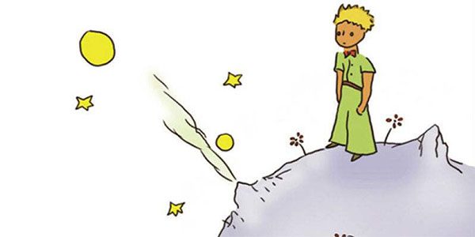
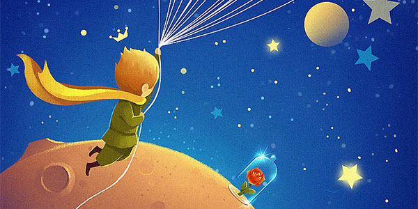
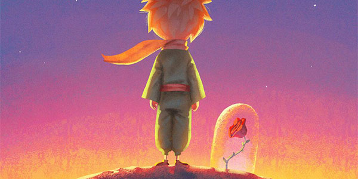
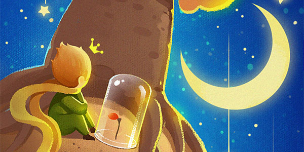
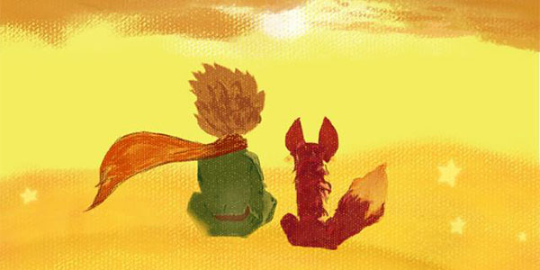
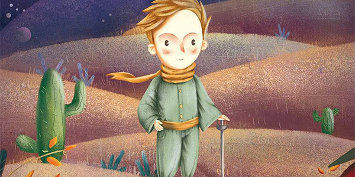
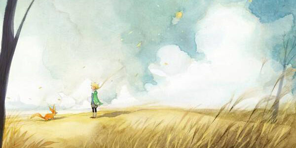
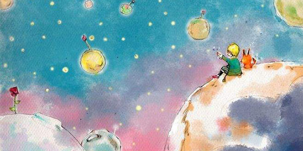

你好，明妍！
WISH YOU HAPPY EVERYDAY
距离18岁还有x天
小王子 The Little Prince
献给列翁.维尔特
献给还是小男孩时的列翁.维尔特

第1章
当我还只有六岁的时候，在一本描写原始森林的名叫《真实的故事》的书中

第2章
我就这样孤独地生活着，没有一个能真正谈得来的人

第3章
我费了好长时间才弄清楚他是从哪里来的

第4章
我还了解到另一件重要的事，就是他老家所在的那个星球比一座房子大不了多少
第5章
每天我都了解到一些关于小王子的星球，他的出走和旅行等事情
第6章
啊！小王子，就这样，我逐渐懂得了你那忧郁的生活

第7章
第五天，还是羊的事，把小王子的生活秘密向我揭开了
第8章
很快我就进一步了解了这朵花儿。在小王子的星球上，过去一直都生长着一些只有一层花瓣的很简单的花

第9章
我想小王子大概是利用一群候鸟迁徙的机会跑出来的
第10章
在附近的宇宙中，还有 325、326、327、328、329、330等几颗小行星
第11章
第二个行星上住着一个爱虚荣的人
第12章
小王子所访问的下一个星球上住着一个酒鬼

第13章
第四个行星是一个实业家的星球
第14章
第五颗行星非常奇怪，是这些星星中最小的一颗
第15章
第六颗行星则要大十倍。上面住着一位老先生，他在写作大部头的书
第16章
第七个行星，于是就是地球了
第17章
当人们想们想要说得俏皮些的时候，说话就可能会不大实在
第18章
小王子穿过沙漠。他只见过一朵花，一个有着三枚花瓣的花朵，一朵很不起眼的小花
第19章
小王子爬上一座高山。过去他所见过的山就是那三座只有他膝盖那么高的火山
第20章
在沙漠、岩石、雪地上行走了很长的时间以后,小王子终于发现了一条大路
第21章
就在这当儿，跑来了一只狐狸。“你好。”狐狸说
第22章
“你好。"小王子说道。"你好。"扳道工说道。

第23章
“你好。"小王子说。"你好。"商人说道。
第24章
这是我在沙漠上出了事故的第八天
第25章
那些人们，他们往快车里拥挤，但是他们却不知道要寻找什么。于是，他们就忙忙碌碌，来回转圈子
第26章
在井旁边有一堵残缺的石墙。第二天晚上我工作回来的时候，我远远地看见了小王子耷拉着双腿坐在墙上
第27章
到现在，一点不错，已经有六年了…我还从未讲过这个故事